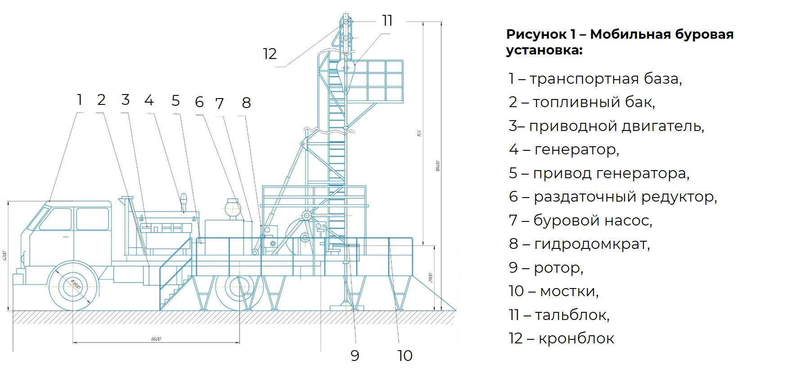

3/10

Мобильная буровая установка (МБУ)(Рисунок 1) применяется при разведочном бурении, капитальном ремонте скважин, а также зарезке нового ствола скважины. Мобильная буровая установка отличается от буровой установки для глубокого бурения тем, что монтаж и демонтаж проводится в более кратчайшие сроки.
Буровая установка состоит из комплекса механизмов, таких как: буровая вышка (преимущественно мачтового типа), талевой системы, ротора, буровых насосов, буровой лебедки, ЦСГО (центральная система грубой очистки бурового раствора) и др.
Буровые вышки мачтового типа отличаются от буровых вышек башенного типа количеством опор: в мачтовой – 2 (для устойчивости они закрепляется оттяжками); в башенной – 4; а также способами монтажа. В верхней части буровой вышки находится балкон для второго помощника бурильщика и магазин для верхних концов свечей. Свечи в бурении нефтяных и газовых скважин представляют собой несколько труб, соединенных между собой.